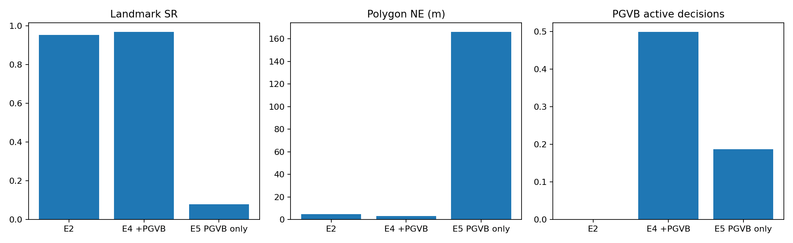
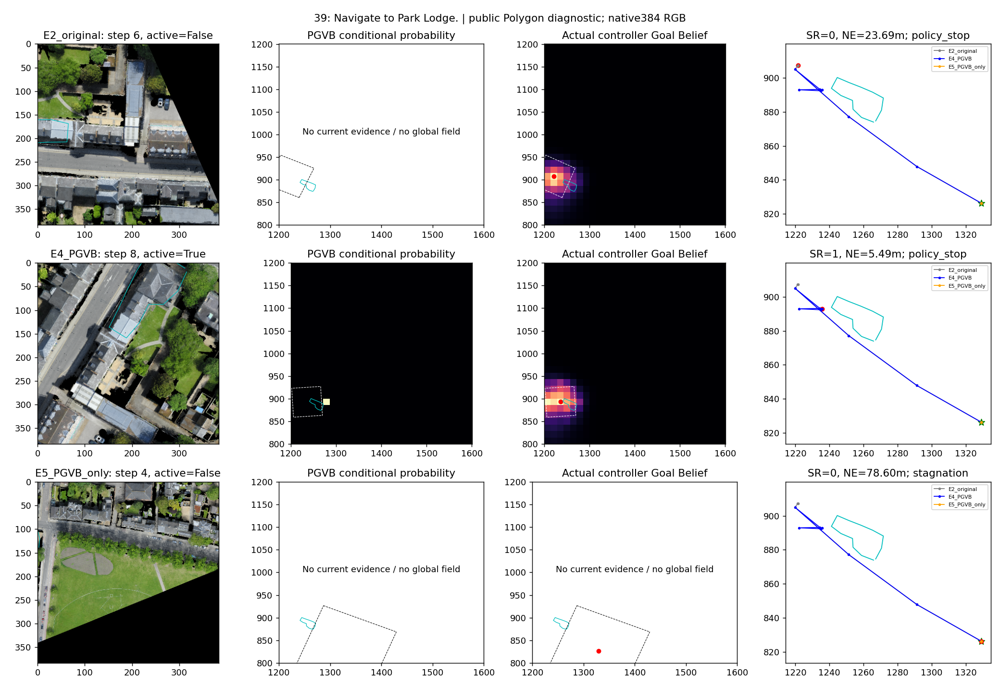
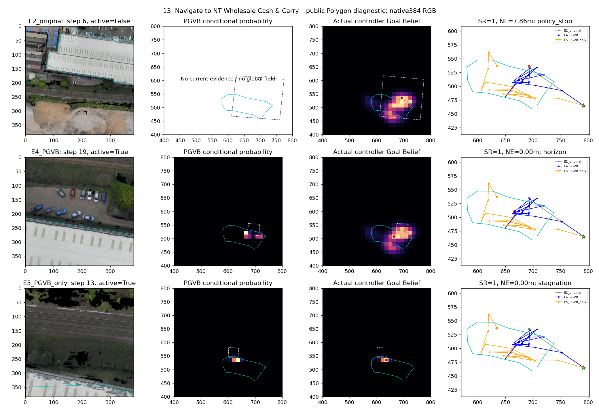
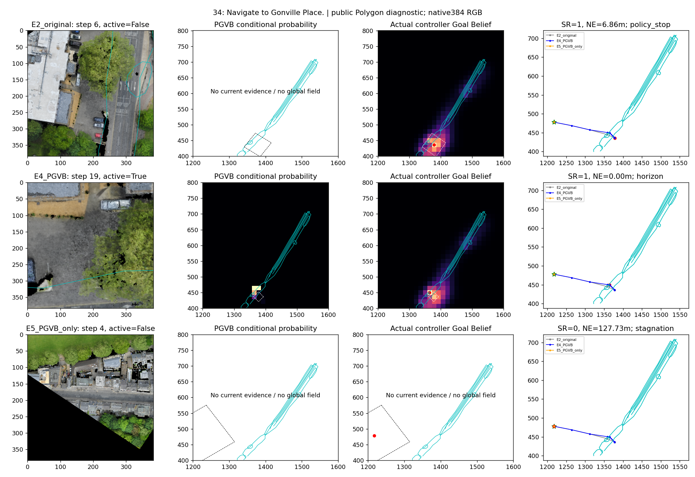
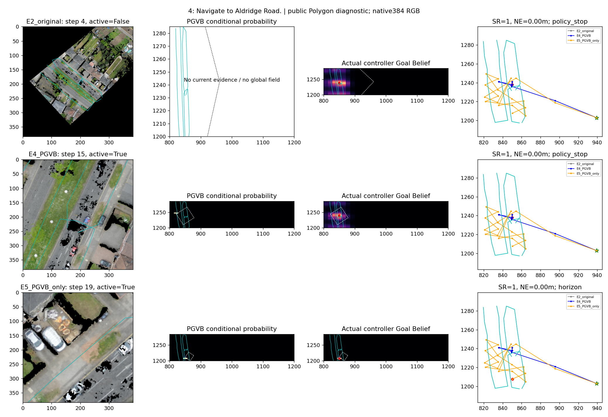
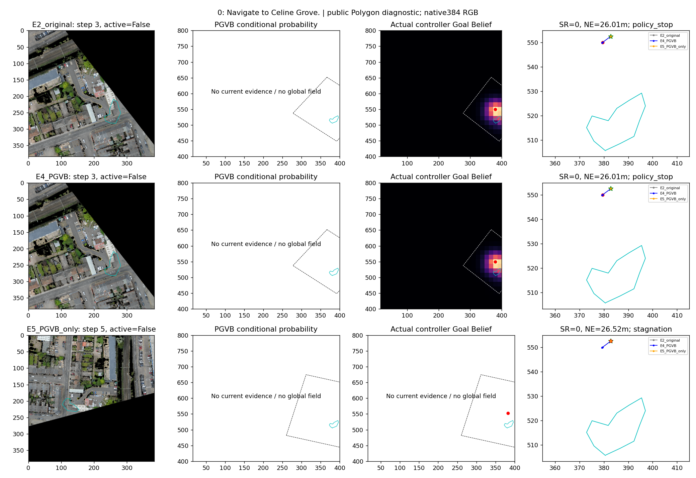
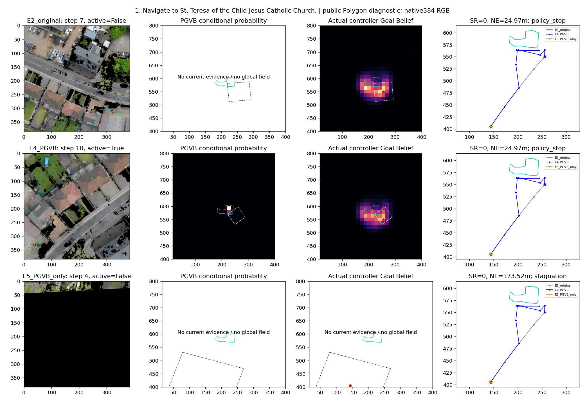

公开Polygon距离评价；不是原始CityNav目标任务或像素实例准确率。
中文报告 | 逐任务CSV | 全部原始轨迹
| Index | 地标 | 类别 | E2 SR | E4 SR | E5 SR |
|---|---|---|---|---|---|
| 0 | Celine Grove | Road | 0 | 0 | 0 |
| 1 | St. Teresa of the Child Jesus Catholic Church | Building | 0 | 0 | 0 |
| 2 | The Food Warehouse | Building | 1 | 1 | 0 |
| 3 | Willmore Road | Road | 1 | 1 | 0 |
| 4 | Aldridge Road | Road | 1 | 1 | 1 |
| 5 | Park Hotel | Building | 1 | 1 | 0 |
| 6 | Nobel Way | Road | 1 | 1 | 0 |
| 7 | Holford Drive | Road | 1 | 1 | 0 |
| 8 | Timet | Building | 1 | 1 | 0 |
| 9 | West Midlands Police Custody Suite | Building | 1 | 1 | 0 |
| 10 | Penhurst Avenue | Road | 1 | 1 | 0 |
| 11 | Perry Barr Carpets | Building | 1 | 1 | 0 |
| 12 | Aston Lane | Road | 1 | 1 | 0 |
| 13 | NT Wholesale Cash & Carry | Building | 1 | 1 | 1 |
| 14 | Perry Barr Methodist Church | Building | 1 | 1 | 0 |
| 15 | Aston Lane | Road | 1 | 1 | 0 |
| 16 | Aldridge Road | Road | 1 | 1 | 0 |
| 17 | W. D. M. Cars | Building | 1 | 1 | 0 |
| 18 | West Midlands Police Custody Suite | Building | 1 | 1 | 0 |
| 19 | Inglis Building | Building | 1 | 1 | 0 |
| 20 | James Dyson Building | Building | 1 | 1 | 0 |
| 21 | Panton Street | Road | 1 | 1 | 0 |
| 22 | St Peter's Terrace | Other | 1 | 1 | 0 |
| 23 | Corn Exchange Street | Road | 1 | 1 | 0 |
| 24 | Maitland Robinson Library | Building | 1 | 1 | 0 |
| 25 | Sedgwick Building | Building | 1 | 1 | 0 |
| 26 | The Quadrangle | Other | 1 | 1 | 0 |
| 27 | Chesterton Road | Road | 1 | 1 | 0 |
| 28 | Student Castle Cambridge | Building | 1 | 1 | 0 |
| 29 | Victoria Road | Other | 1 | 1 | 0 |
| 30 | Catholic Church of Our Lady and the English Martyrs | Building | 1 | 1 | 0 |
| 31 | Drosier Road | Road | 1 | 1 | 0 |
| 32 | Gonville Hotel | Building | 1 | 1 | 0 |
| 33 | Essex House | Building | 1 | 1 | 0 |
| 34 | Gonville Place | Road | 1 | 1 | 0 |
| 35 | YMCA | Building | 1 | 1 | 0 |
| 36 | Adam and Eve Street | Road | 1 | 1 | 0 |
| 37 | Angel & Blume | Building | 1 | 1 | 0 |
| 38 | Fitzroy Street | Other | 1 | 1 | 0 |
| 39 | Park Lodge | Building | 0 | 1 | 0 |
| 40 | Cambridge Community Kitchen | Building | 1 | 1 | 0 |
| 41 | Eden Chapel | Building | 1 | 1 | 0 |
| 42 | Victoria Avenue | Road | 1 | 1 | 0 |
| 43 | Ferry Path | Road | 1 | 1 | 1 |
| 44 | Nelson Court | Building | 1 | 1 | 0 |
| 45 | Collier Road | Road | 1 | 1 | 0 |
| 46 | Mumford Building | Building | 1 | 1 | 1 |
| 47 | Petersfield Mansions | Other | 1 | 1 | 0 |
| 48 | Swinhoe House | Building | 1 | 1 | 0 |
| 49 | Belvoir Road | Road | 1 | 1 | 0 |
| 50 | Broadmeadows | Building | 1 | 1 | 0 |
| 51 | Woodvale Lodge | Other | 1 | 1 | 0 |
| 52 | Abbey Street | Road | 1 | 1 | 0 |
| 53 | Beche Road | Other | 1 | 1 | 0 |
| 54 | Rose and Crown House | Building | 1 | 1 | 0 |
| 55 | Pound Hill House | Building | 1 | 1 | 0 |
| 56 | St Peter's Street | Road | 1 | 1 | 0 |
| 57 | Inglis Building | Building | 1 | 1 | 0 |
| 58 | Scholars' Garden | Other | 1 | 1 | 0 |
| 59 | The Fen Causeway | Road | 1 | 1 | 1 |
| 60 | Fitzwilliam Pharmacy | Building | 1 | 1 | 0 |
| 61 | Silver Street | Road | 1 | 1 | 0 |
| 62 | Benson Hall | Building | 1 | 1 | 0 |
| 63 | Richmond Terrace | Road | 1 | 1 | 0 |

E2_original 原生RGB | 原始Belief/位姿
E2_original 原生RGB | 原始Belief/位姿
E2_original 原生RGB | 原始Belief/位姿
E2_original 原生RGB | 原始Belief/位姿
E2_original 原生RGB | 原始Belief/位姿
E2_original 原生RGB | 原始Belief/位姿